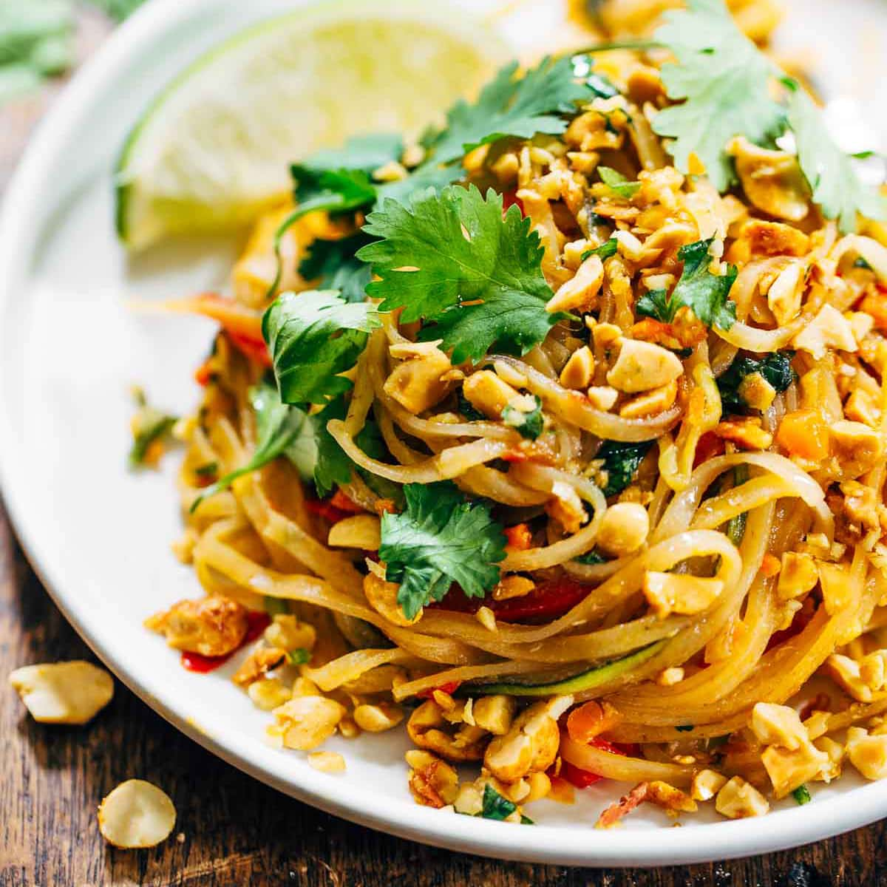

Snelle pad Thai
Beroemd in Thailand: het bordje gebakken noedels met een geroerbakt eitje erdoor en pinda's en limoen erover. Wij maken een snelle pad thai met kipfilet.
Ingredienten
Voor 4 personen.
- 220 g Koh Thai rice noodles (pakje)
- 2 liter kokend water
- 1 limoen
- 4 el vissaus
- 2 el donkere basterdsuiker
- 300 g kipfilethaasjes
- 50 g gezouten pinda's
- 3 el tamarindepasta
- 3 middelgrote eieren
- 3 el arachideolie
- 400 g Thaise wokgroente
- 125 g taugé
Bereiding
- Doe de noedels in een ruime kom en schenk er kokend water op tot ze helemaal onderstaan. Dek af met vershoudfolie, laat 10 min. staan en giet af.
- Pers ondertussen de limoen uit en meng het sap met de tamarinde, vissaus en suiker. Snijd de kip in stukjes van 1 cm. Hak de pinda’s grof.
- Klop de eieren los met peper en zout. Verhit de olie in een wok en roerbak de eieren 1 min. Schep uit de wok en houd apart.
- Verhit de olie in de wok en roerbak de kip en roerbakmix 4 min. Voeg het tamarinde-vissausmengsel, ei, de taugé en noedels toe en roerbak nog 1 min.
- Bestrooi met de pinda’s en serveer direct.
- Variatie tip: probeer het ook eens met garnalen in plaats van kip a.